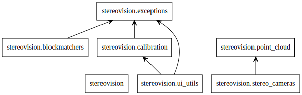
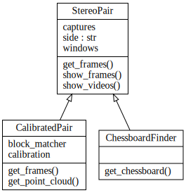
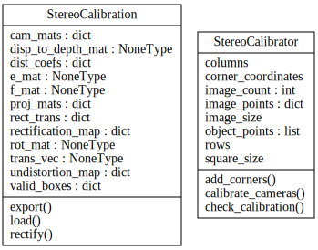
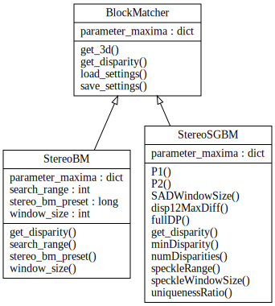
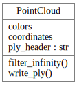
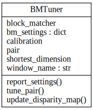
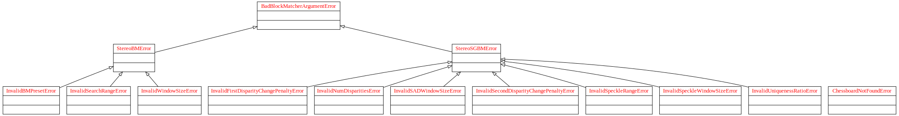

Utilities for 3d reconstruction using stereo cameras.
Modules:
- stereo_cameras - Camera interfaces
- calibration - Tools for calibrating stereo cameras
- blockmatchers - Blockmatching algorithm matchers
- point_cloud - Point clouds
- ui_utils - Utilities for user interaction
- exceptions - Various exceptions
Import structure:
Classes for interacting with stereo cameras.
Classes:

StereoPair - Base class for interacting with stereo cameras
- ChessboardFinder - Class for finding chessboards with both cameras
- CalibratedPair - Calibrated stereo camera pair that rectifies its images
Bases: object
A stereo pair of cameras.
This class allows both cameras in a stereo pair to be accessed simultaneously. It also allows the user to show single frames or videos captured online with the cameras. It should be instantiated with a context manager to ensure that the cameras are freed properly after use.
Initialize cameras.
devices is an iterable containing the device numbers.
Window names for showing captured frame from each camera
Video captures associated with the StereoPair
Bases: stereovision.stereo_cameras.StereoPair
A StereoPair that can find chessboards in its images.
Initialize cameras.
devices is an iterable containing the device numbers.
Take a picture with a chessboard visible in both captures.
columns and rows should be the number of inside corners in the chessboard’s columns and rows. show determines whether the frames are shown while the cameras search for a chessboard.
Get current frames from cameras.
Show current frames from cameras.
wait is the wait interval in milliseconds before the window closes.
Show video from cameras.
Bases: stereovision.stereo_cameras.StereoPair
A StereoPair that works with rectified images and produces point clouds.
Initialize cameras.
devices is an iterable of the device numbers. If you want to use the CalibratedPair in offline mode, it should be None. calibration is a StereoCalibration object. block_matcher is a BlockMatcher object.
StereoCalibration object holding the camera pair’s calibration
BlockMatcher object for computing disparity and point cloud
Show current frames from cameras.
wait is the wait interval in milliseconds before the window closes.
Show video from cameras.
Classes for calibrating homemade stereo cameras.
Classes:

- StereoCalibration - Calibration for stereo camera
- StereoCalibrator - Class to calibrate stereo camera with
Bases: object
A stereo camera calibration.
The StereoCalibration stores the calibration for a stereo pair. It can also rectify pictures taken from its stereo pair.
Initialize camera calibration.
If another calibration object is provided, copy its values. If an input folder is provided, load *.npy files from that folder. An input folder overwrites a calibration object.
Camera matrices (M)
Distortion coefficients (D)
Rotation matrix (R)
Translation vector (T)
Essential matrix (E)
Fundamental matrix (F)
Rectification transforms (3x3 rectification matrix R1 / R2)
Projection matrices (3x4 projection matrix P1 / P2)
Disparity to depth mapping matrix (4x4 matrix, Q)
Bounding boxes of valid pixels
Undistortion maps for remapping
Rectification maps for remapping
Bases: object
A class that calibrates stereo cameras by finding chessboard corners.
Store variables relevant to the camera calibration.
corner_coordinates are generated by creating an array of 3D coordinates that correspond to the actual positions of the chessboard corners observed on a 2D plane in 3D space.
Number of calibration images
Number of inside corners in the chessboard’s rows
Number of inside corners in the chessboard’s columns
Size of chessboard squares in cm
Size of calibration images in pixels
Real world corner coordinates found in each image
Array of real world corner coordinates to match the corners found
Array of found corner coordinates from calibration images for left and right camera, respectively
Record chessboard corners found in an image pair.
The image pair should be an iterable composed of two CvMats ordered (left, right).
Check calibration quality by computing average reprojection error.
First, undistort detected points and compute epilines for each side. Then compute the error between the computed epipolar lines and the position of the points detected on the other side for each point and return the average error.
Wrapper classes for block matching algorithms.
Classes:

BlockMatcher - Abstract class that implements interface for subclasses
- StereoBM - StereoBM block matching algorithm
- StereoSGBM - StereoSGBM block matching algorithm
Bases: object
Block matching algorithms.
This abstract class exposes the interface for subclasses that wrap OpenCV’s block matching algorithms. Doing so makes it possible to use them in the strategy pattern. In this library, that happens in CalibratedPair, which uses a unified interface to interact with any kind of block matcher, and with BMTuners, which can discover the BlockMatcher's parameters and allow the user to adjust them online.
Each BlockMatcher protects its block matcher’s parameters by using getters and setters. It exposes its settable parameter and their maximum values, if they exist, in the dictionary parameter_maxima.
load_settings, save_settings and get_3d are implemented on BlockMatcher itself, as these are independent of the block matching algorithm. Subclasses are expected to implement _replace_bm and get_disparity, as well as the getters and setters. They are also expected to call BlockMatcher‘s __init__ after setting their own private variables.
Set block matcher parameters and load from file if necessary.
Dictionary of parameter names associated with their maximum values
Bases: stereovision.blockmatchers.BlockMatcher
A stereo block matching BlockMatcher.
Compute disparity from image pair (left, right).
First, convert images to grayscale if needed. Then pass to the _block_matcher for stereo matching.
Compute point cloud.
Load settings from file
Save block matcher settings to a file object
Bases: stereovision.blockmatchers.BlockMatcher
A semi-global block matcher.
Instantiate private variables and call superclass initializer.
Compute point cloud.
Load settings from file
Save block matcher settings to a file object
Point cloud class generated from stereo image pairs.
Classes:

- PointCloud - Point cloud with RGB colors
Bases: object
3D point cloud generated from a stereo image pair.
Initialize point cloud with given coordinates and associated colors.
coordinates and colors should be numpy arrays of the same length, in which coordinates is made of three-dimensional point positions (X, Y, Z) and colors is made of three-dimensional spectral data, e.g. (R, G, B).
Header for exporting point cloud to PLY
Utilities for easing user interaction with the stereovision package.
Variables:
- CHESSBOARD_ARGUMENTS - argparse.ArgumentParser for working with chessboards
- STEREO_BM_FLAG - argparse.ArgumentParser for using StereoBM
Functions:
- find_files - Discover stereo images in directory
- calibrate_folder - Calibrate chessboard images discoverd in a folder
Classes:

- BMTuner - Tune block matching algorithm to camera pair
Command line arguments for collecting information about chessboards
Command line arguments for using StereoBM rather than StereoSGBM
Discover stereo photos and return them as a pairwise sorted list.
Calibrate camera based on chessboard images, write results to output folder.
All images are read from disk. Chessboard points are found and used to calibrate the stereo pair. Finally, the calibration is written to the folder specified in args.
Bases: object
A class for tuning Stereo BM settings.
Display a normalized disparity picture from two pictures captured with a CalibratedPair and allow the user to manually tune the settings for the BlockMatcher.
The settable parameters are intelligently read from the BlockMatcher, relying on the BlockMatcher exposing them as parameter_maxima.
Initialize tuner window and tune given pair.
block_matcher is a BlockMatcher, calibration is a StereoCalibration and image_pair is a rectified image pair.
Window to show results in
Stereo calibration to find Stereo BM settings for
(left, right) image pair to find disparity between
Block matcher to be tuned
Shortest dimension of image
Settings chosen for BlockMatcher
Update disparity map in GUI.
The disparity image is normalized to the range 0-255 and then divided by 255, because OpenCV multiplies it by 255 when displaying. This is because the pixels are stored as floating points.
Report chosen settings for parameter in block_matcher.
bm_settings is updated to include the latest state before work is begun. This state is removed at the end so that the method has no side effects. All settings are reported except for the first one on record, which is block_matcher‘s default setting.
Various exceptions for working with stereovision.
Classes:

ChessboardNotFoundError
BadBlockMatcherArgumentError
StereoBMError
- InvalidBMPresetError
- InvalidSearchRangeError
- InvalidWindowSizeError
StereoSGBMError
- InvalidNumDisparitiesError
- InvalidSADWindowSizeError
- InvalidFirstDisparityChangePenaltyError
- InvalidSecondDisparityChangePenaltyError
- InvalidUniquenessRatioError
- InvalidSpeckleWindowSizeError
- InvalidSpeckleRangeError
Bases: exceptions.Exception
No chessboard could be found in searched image.
Bases: exceptions.Exception
Bad argument supplied for a BlockMatcher.
Bases: stereovision.exceptions.BadBlockMatcherArgumentError
Bad argument supplied for a StereoBM.
Bases: stereovision.exceptions.BadBlockMatcherArgumentError
Bad argument supplied for a StereoSGBM.
Bases: stereovision.exceptions.StereoBMError
Invalid BM preset.
Bases: stereovision.exceptions.StereoBMError
Invalid search range.
Bases: stereovision.exceptions.StereoBMError
Invalid search range.
Bases: stereovision.exceptions.StereoSGBMError
Invalid number of disparities.
Bases: stereovision.exceptions.StereoSGBMError
Invalid search window size.
Bases: stereovision.exceptions.StereoSGBMError
Invalid first disparity change penalty.
Bases: stereovision.exceptions.StereoSGBMError
Invalid second disparity change penalty.
Bases: stereovision.exceptions.StereoSGBMError
Invalid uniqueness ratio.
Bases: stereovision.exceptions.StereoSGBMError
Invalid speckle window size.
Bases: stereovision.exceptions.StereoSGBMError
Invalid speckle range.
{kind=link}
{kind=link}